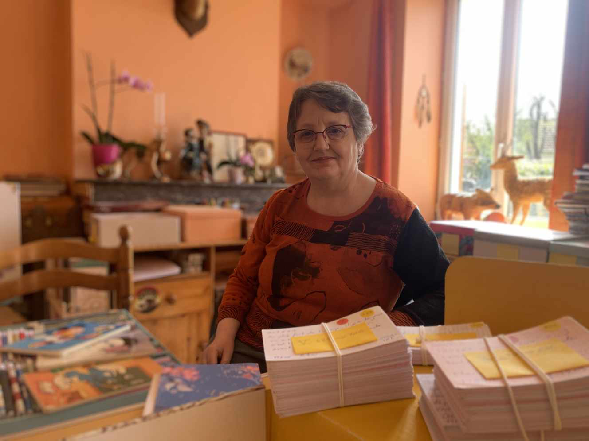
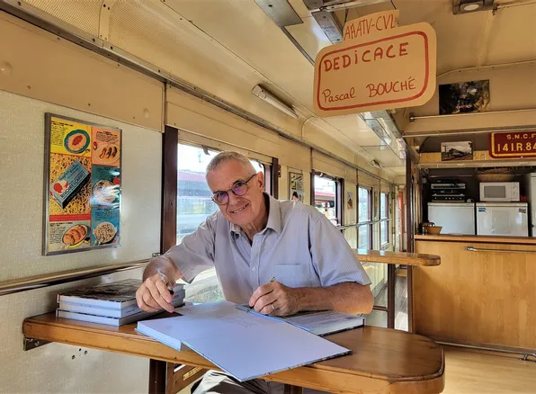
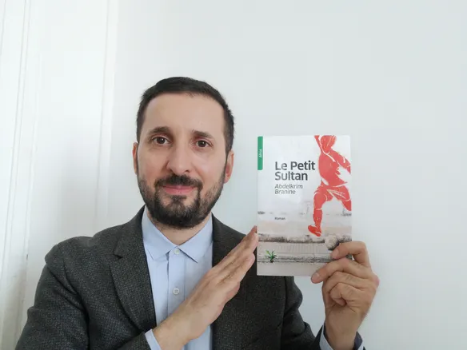

AUTEURS 2022
Auteurs & éditeurs, édition 2022. Infos complémentaires sur l'auteur et son livre en cliquant sur la dernière phrase de chaque bio.
Dernière mise à jour: 27/10/2022.
Conférences
11h00 - Gilles Magréau : Victor Hugo (accompagné à la guitare par Antoinse Biosa)
14h00 - François Hollande : présentation de son dernier livre Bouleversements, paru le 7 septembre
15h30 - Café rencontre de la médiathèque

ALLORANT Pierre
Gambetta, le combat pour la République (en collaboration avec Walter BADIER), éditions Le Mail
Professeur du droit et des institutions et doyen de l'université d'Orléans, présentation de l'auteurAUCANTE Marieke
Félixine l'abeille noire de Sologne (jeunesse) et Fureur Atlantique (roman), Edita et Les succulentes, éditions L'Andriague
Portrait du jour de l'auteur, sur le blog Culture et justiceAUCHER Laurent
Mémoire ouvrière en Val d'Aubois, journal de recherche, éditions La Bouinotte
Originaire de Vierzon, Laurent Aucher est maître de conférences en sociologie à l’Université d'Orléans. Auteur d'ouvrages consacrés à la mémoire ouvrièreBADIER Walter
Gambetta, le combat pour la République (en collaboration avec Pierre Allorant), éditions Le Mail
Présentation des auteurs, Walter Badier et Pierre Allorant, via le site de l'éditeur

BERGER-GRENIER Véronique
Les grandes rencontres, éditions Maïa
La France buissonnière : Véronique Berger assembleuse de citations, article Le Monde
BLOT Alain
Histoire des sapeurs-pompiers du Cher, édité par Alain Blot (ouvrage en tirage limité)
Un ouvrage de 500 pages sur les pompiers du Cher. Article Le Berry Républicain
BOIZEAU Léandre
Mis & Thiennot, Une vie de combat, éditions La Bouinotte
L'affaire Mis & Thenniot. Une erreur judiciaire ? Lien vers le sujet traité avec l'auteur pour BFMTV

BOUCHE Pascal
Quand le train devient passion, la 141 R 840, éditions du Cabri
Le Vierzonnais Pascal Bouché retrace, dans un livre de 256 pages, l’histoire de la 141 R 840, une locomotive à vapeur. Article Le Berry RépublicainBRANGER Stéphane
Silencieuse mémoire (illustré par Corinne Saint Mleux), éditions Valmont
A Paraitre en octobre. Autres livres de l'auteur à découvrir via son site officiel

BRANINE Abdelkrim
Le petit Sultan, éditions Zellige
Article Le Berry Republicain: " Le vierzonnais sort un roman ayant pour héros un espoir de football"BREGER Véronique
Tomber ensemble, Les Ardents Editeurs
Présentation de l'auteur et synopsis du livre via le site de l'éditeur
BROSCHI Carla
Harcèlement. Silence !, ouvrage édité l'auteur
Survivre aux coulisses administratives de l'hôpital public. Mémoire d'un fonctionnaire hospitalier
BRUNAUD Maud (absente)
Noël en Berry (jeunesse), présence de l'illustratrice Céline Alapetite, et Mort'elle (polar), éditions Bouinotte

CAMAILLE Serge
L'enfant du Carlaldès, éditions De Borée (sortie en poche, Prix Averne)
Présentation de l'auteur via le site de l'éditeur

CAPO Bernard
Jean Sautivet l'hôte de George Sand, BlueBerry
Scenariste et auteur de bande dessinée, depuis 1983. Originaire de Bourges. Article Le Berry Republicain

CONRAUX Hélène
Dehuin, le silence des Shenjin, Hélène Conraux éditions
Romancière Fantasy. Blog de l'auteur
DALIGAULT Xavier
Blanche louve, A l'ombre d'un parapluie et Maia (trois livres jeunesse), Ella éditions
Présentation des livres via le site de l'éditeur

DASSAS Michele
Le dîner de l'exposition, Ramsay éditions
Roman inspiré d'une histoire vraie, autour du scandale du restaurant Le Dîner de l'Exposition, en 1855, à découvrir les premières pages
DE REDON Louis
Justice pour la planète !, éditions de l''Atelier (attention : auteur présent de 15h00 à 17h00)
5 combats citoyens qui font changer les lois. Présentation du livre
DESSEUX Fabienne
Qui veut la peau du dessin de presse ?, éditions Eyrollesr
Invitée du plateau France Info pour ce dernier ouvrage

G-DESENDER Peggy
Fontaï l'ombre des secrets, tome 3, éditions Aequilibre
Livre Fantasy, présentation éditeur
DETTER Thierry
Bohémia, Ella éditions (et Reset, même éditeur, sous réserve d'impression à temps)
Présentation du premier roman de Thierry Detter: aussi onirique qu'ancré dans la vie, aussi surpenant que séduisant
DOUBLE CŒUR, association éditeur
Présentation du livre audio de Robin Renucci : Il n'y a d'oeuvre sans public

DUCASSE Sophie
La rêverie au coeur de ma douleur, Unicité
Journal intime relatant le combat contre sa maladie : le cancer (3ème volet à paraître en octobre)
DUMERGUE Anne
Y'en a marre des loups ! (jeunesse), Tuttistori éditions et Les yeux de Gwen, Ella éditions
Une petite fille au caractère bien trempé cherche un nouveau héros pour remplacer le loup dans les histoires
DUCHESNE Martine
Les cahiers oubliés et Pour exister encore, éditions Les Nouveaux Auteurs (Prix Femme Actuelle 2021)
Interview de l'auteur pour L'est Républicain
DUPONT Frédéric & EMMANUELLE Roger
Reflets de cerfs, Escourbiac
La Sologne avec son patrimoine naturel abrite l’une des plus belles populations de cervidés en France. Livre photos tirage limité
DUPUIS Marc
Guide du pays de Tallayrand, éditions la Bouinotte
Marc Dupuis nous livre les incontournables autant que les lieux les plus secrets du terrtoir: présentation du livre
ETIEMBLE Jeanne
Josepha, éditions l'Harmattan
Présentation de l'ouvrage situé dans le contexte social et politique du début du XXe siècle
FOURNET-PEROT Sonia
Meghalites rock, Les Ardents Editeurs
Un polar fantastique, enflammée. Une héroïne punk des temps modernes. Présentation de son second roman via le site Babelio
GILBERT Jean-Pierre
Histoires vraies, sornettes et menteries du Haut Berry, Alice Lyner éditions
Chroniques authentiques, d’adaptations de légendes, où se mêlent le drôle et l’imaginaire. Présentation du livre
GIRAUD Alain
Dictionnaire des rues de Bourges, éditions la Bouinotte
Un ouvrage exceptionnel pour découvrir Bourges dans l'intimité de ses rues, article le Berry Republicain
GLATT Gérard
Juste avant l'espérance, Christine Bonneton éditeur (à paraître le 6 octobre)
Portrait et présentation via le blog Culture et justice Portrait et présentation via le blog Culture et justice
GRELET Marcel
Terre éphémère, Ella éditions et La malle au secret, éditions Astrabale
Présentation des livres de l'auteur via son site officiel
HOLLANDE François
Bouleversements, éditions Stock
L'ancien président François Hollande annoncé au salon du livre de Vierzon. Le Berry Républicain
HUGET Jany
Les voitures emblématiques des années 80 et L'almanach 2023 des fous du tracteur, Ramsay éditions
Présentation du nouveau livre consacré cette fois aux voitures des années 80
ICONOVOX
Stand éditeur vierzonnais, en présence de son fondateur, James Tanay

JACQ Olivier
Présentation de ce nouveau roman via le site de l'éditeur
Présentation de ce nouveau roman via le site de l'éditeur
JAGU Tony
Seberg Gary une quête ininterrompue et Echappée vers l'ouest, L'Harmattan
A découvrir via le site de l'auteur
LAFRANQUE Henri
L'âme des Ormes, éditions La Bouinotte
L'auteur puise dans sa réserve d'histoires recueillies tout au long de sa vie de médecin de campagne
LECOMTE Ludovic
Tutot tricot (jeunesse), Ella éditions
Professeur des écoles et auteur d'ouvrages pour enfants. Présentation via le site de l'éditeur
LE MAIL EDITIONS
Stand éditeur, en présence de Laëtitia Berruet
La bague sans doigt, roman policier écrit en prison par Jean Zay réédité 80 ans après sa sortie. Revue de presse
LETOURNEAU Henri
Jean de Berry, éditions Valmont

LISY
Association édittice de livres audios. Présentation de trois livres audios de Gilles Magréau
Présentation des ouvrages, de l'actualité et des évenements de l'association
MAGREAU Gilles
Victor le magnifique (Victor Hugo en bande-dessinée, illustrée par Jérôme Lavoine, présent également sur le salon)
Article Le Petit Solognot
MANGIN Pierre
Mortelle envolée, éditions La Bouinotte
Premier Polar ayant pour fond le salon du livre de Chateauroux, L'envolée des Livres. Article La nouvelle Republique

MAYER Jean
Entre deux, éditions Spinelle
Itineraire d'une vie cabossée. Dernier roman de l'ex-médecin Berruryer. Article du 19 septembre, Le Berry Républicain
Médiathèque de Vierzon
Stand & café rencontre à 14h00

MIKAILOFF Pierre
L'élévage du brochet en bassin clos, éditions IN8 et Les étoiles du club des 27, Larousse
Musicien, journaliste, écrivain, scénariste, chroniqueur musique (BFMTV...). Lien vers la page wikipédia de cet auteur
MIRANDE Noëlle
Les écrits s'envolent aussi, Ella éditions
Présentation du livre via le site de l'éditeur
PONCET Bruno
La joie comme vengeance, Robert Lafon
Survivant du Bataclan, le vierzonnais Bruno Poncet livre un récit lumineux et nécessaire: article Le Berry Républicain
PORTEVIN Jean-Pierre
Le vent du Munday (fantasy), Ella éditions
Nouveau roman qui s'inscrit dans le genre de la fantasy et fait la part belle à la magie, aux elfes. Article La nouvelle République
RAFESTHAIN Alain
Le bonheur en héritage, éditions La Bouinotte
Nouveau livre autobiographique pour l'ancien président de la région Centre. Présentation via le site de l'éditeur

RIVE Alain
Le vieux Vierzon tome 2, éditions Valmont

ROSSIGNOL Jean-Jacques
Eternel destins, éditions Valmont
Articles presse Le Berry Républicain relatifs à l'auteur via son site officiel
RUFIN Jean-Christophe
Notre otage à Acalpuco, Flammarion (Prix Goncourt 2001, membre de l'académie française) - (annulation de dernière minute concernant Jean-Christophe Ruffin. Les livres seront toutefois en vente sur notre salon)
Cinquième volume du héros diplomate calamiteux ! Article Nouvel Obs pour le Prix Goncourt 2001
SANAGA (dessinateur de presse)
Les déserts médicaux : il n'y a plus de soignant au numéro demandé, stand des éditions Iconovox
Présentation du livre via le site de l'éditeur Sanaga dessinateur de presse made in Berry. Interview pour Vierzonitude
SANDRIER Jean-Claude
Docteur je suis communiste, est-ce grave ?, éditions La Bouinotte
L'ancien maire de Bourges publie un essai sur le communisme. Article La Nouvelle République
SAULNIER Jean-Pierre
Sept chemins de liberté, JPS éditions
Premier roman pour l'ancien élu. Article Le Berry Républicain
SENON Pierre
Les quatres saisons de Marcello l'asticot (jeunesse), Gaut et Senon édition
Présentation des ouvrages jeunesse de Pierre Senon
SIKORSKI Laura
Tête de mûle veut devenir chevalière (jeunesse), éditions Magnard
Livre jeunesse, à partir de 9 ans. Présentation du livre via le site de l'éditeur
SIVREY René-Serge
Journal de voyage, éditions Valmont
René-Serge Sivrey: un battant. Présentation de l'auteur sur Songazine
SOUMET Jean-Pierre
Le paradis existe puisque je l'ai visité, JPS éditions
Interview réalisée en 2018 pour Vierzonitude
VERGER Marie-Andrée
Plus tard je serai sorcière (jeunesse), éditions Les Petits Cadets
Divers livres pour enfants, présentation de quelques livres et de l'auteur
VIGNIER-NEVE Romain
Décalage (recueil de nouvelles), éditions Douro
Présentation du livre via le site de l'éditeur